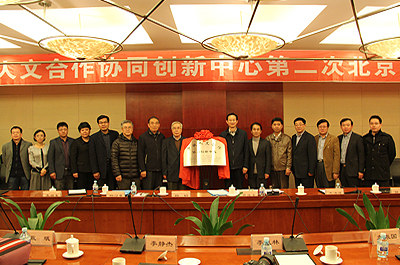

- 中俄人文合作协同创新确立的原因进行了阐述2014-10-14
- 作为中俄全面战略协作伙伴关系的重要领域和最重要的支撑点2014-10-14
- 工作的计划进行了扼要的汇报2014-10-14
- 国家在涉及中俄人文合作战略层面尚有许多问题急需解决2014-10-14
- 黑龙江大学有责任、有能力为中俄人文合作战略作出贡献2014-10-14

我校召开“中俄人文合作协同创新中心”培育组建...
- 1
- 2
- 3
- 4
- 5
我校召开“中俄人文合作协同创新中心”...
6月19日下午2:30，“中俄人文合作协同创新中心”培育组建工作汇报会在我校外事处多功能厅举行。省教
育厅副厅长辛宝忠，省教育厅科技处处长韩延平、副处长王明福，我校文科学院院长、主管科研副院长，
中俄学院、俄罗斯研究院、俄罗斯语言文学与文化研究中心主任、文化哲学研究中心负责人......[详细]
育厅副厅长辛宝忠，省教育厅科技处处长韩延平、副处长王明福，我校文科学院院长、主管科研副院长，
中俄学院、俄罗斯研究院、俄罗斯语言文学与文化研究中心主任、文化哲学研究中心负责人......[详细]